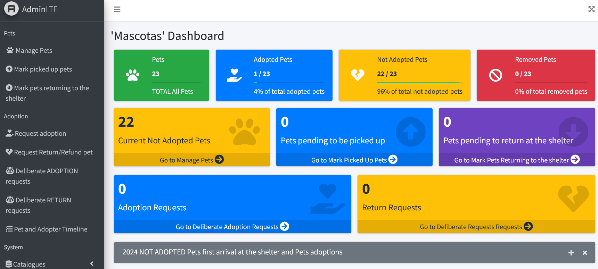
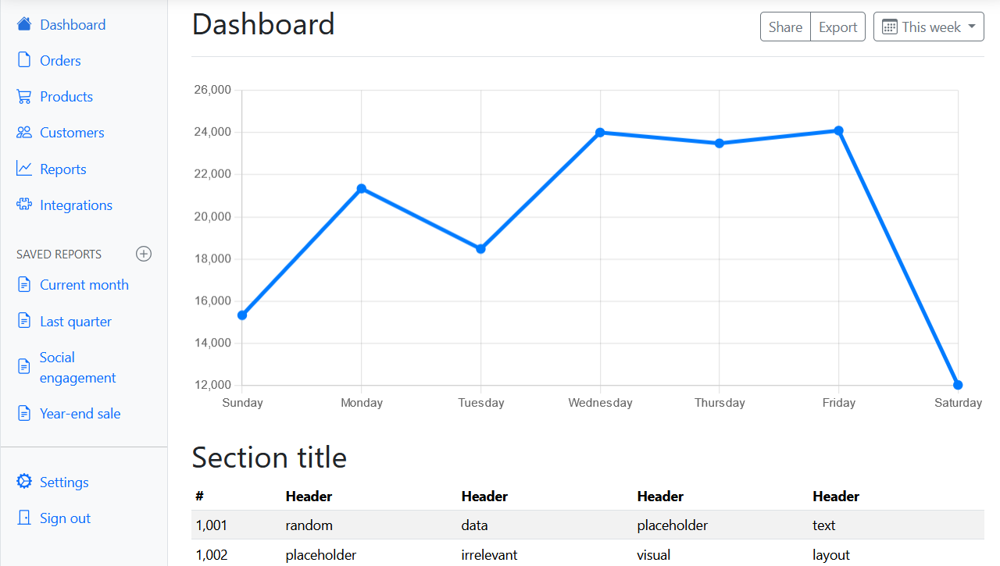
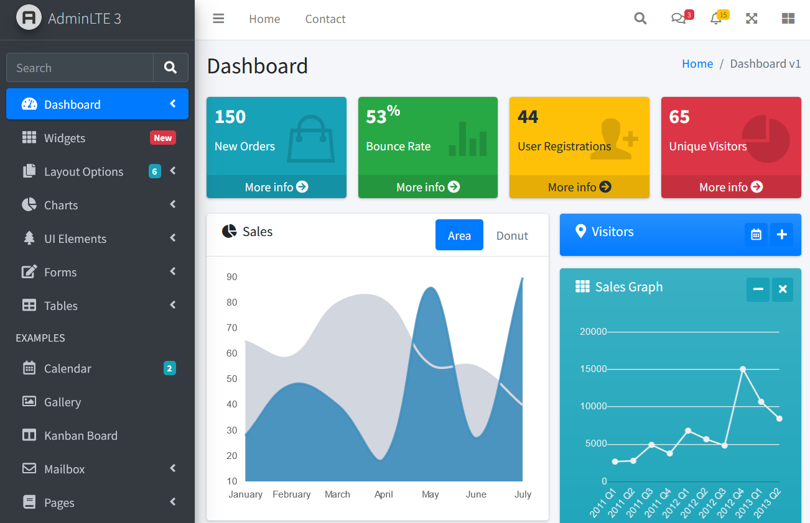
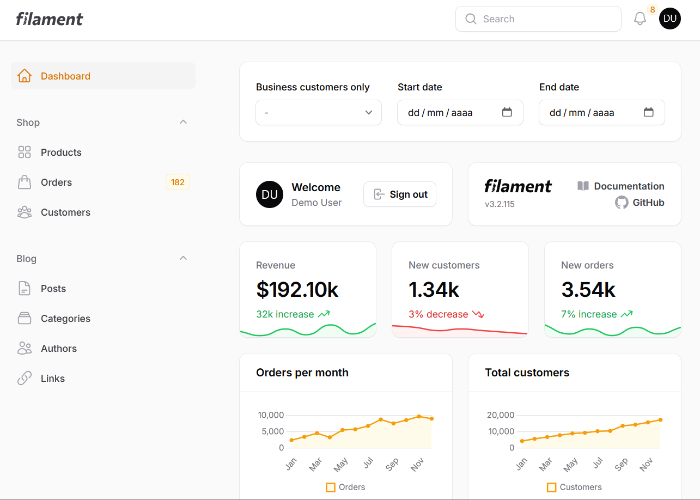

Laravel y los Paneles de Administración
En esta entrada de Blog escribo sobre Laravel, dashboards y un poco de frontend. Además de opinar sobre como se manejan estos temas en entrevistas de trabajo.
Para los interesados, no se usó alguna inteligencia artificial para escribir esto.
Laravel
Laravel es un framework para hacer aplicaciones web. Se usa con PHP siguiendo la arquitectura Model-View-Controller (MVC). En lo personal la documentación de Laravel es muy buena, es muy detallada y con ejemplos útiles.
Si programas en Python, una manera conceptual de ver a Laravel es: Django es a Python como Laravel a PHP.
El framework tiene integeradas algunas soluciones para tareas comunes en el desarrollo de aplicaciones web modernas evitando reinventar la rueda. Por mencionar algunas:
- Autenticación de usuarios
- Laravel Eloquent ORM
- Migraciones de Bases de Datos
- Colas de trabajo
Una tarea común para la que se usa Laravel es hacer un panel de administración (dashboard).
Panel de administración (dashboard)
De acuerdo a Wikipedia, un dashboard es un tipo de interfaz de usuario que a menudo proporciona vistas rápidas de datos relevantes mediante tablas, gráficas u otros elementos.
La idea de un dashboard no es reciente y de acuerdo a las necesidades de usuario se puede descartar usar internet.
Por ejemplo, se puede usar Microsoft Excel para hacer un dashboard y en LibreOffice Calc se puede hacer lo mismo. En ambos casos no se usa directamente un lenguaje de programación y se puede prescindir del internet.
Por otro lado, dependiendo de las necesidades del usuario será requerido un dashboard con funcionalidades específicas y poder acceder por internet. Para estos casos es conveniente usar Laravel para la lógica de negocio y usar herramientas de desarrollo web para visualizar la información y otros elementos como formularios y tablas.
Dashboard en Laravel
Un escenario de como se usaría un dashboard en Laravel es: Usar un controlador para obtener información de una base de datos, generar los reportes requeridos, retornar la información junto con una vista y acomodar los reportes en la vista.
Para la parte visual, Laravel cuenta con un motor de plantillas llamado Blade. Una de sus características es la herencia, que es útil para tener, por ejemplo, una plantilla padre con el header y footer del dashboard además de un body que pueda variar de contenido, para después crear plantillas hijas donde se pone en el cuerpo de la vista la información requerida junto con lo heredado de plantilla padre.
Un ejemplo más específico: Hacer una plantilla padre que tenga Bootstrap vía CDN y después hacer plantillas hijas con Bootstrap ya heredado. Un dashboard hecho en Bootstrap se ve en la siguiente imagen:
Laravel permite usar componentes, de manera conceptual, un componente es un conjunto de diferentes tecnologías que permite reusar elementos personalizados. Es buena idea reusar código siempre que sea posible.
El proyecto Laravel AdminLTE ofrece una manera rápida de usar AdminLTEv3 con Laravel (>=7), lo que permite empezar a desarrollar un dashboard con rapidez. Además cuenta con: una plantilla blade que se puede heredar, un avanzado sistema de configuración y útiles componentes estilizados para formularios o tarjetas informativas. Un dashboard hecho con Laravel AdminLTE se muestra en la siguiente imagen:
Desde hace pocos años (esta entrada de blog se escribió en 2024) el proyecto Filament ha ganado popularidad y aceptación para realizar dashboards en Laravel.
Filament
De acuerdo con el repositorio en GitHub de Filament. Su primer lanzamiento (como pre-release) fue en Octubre de 2020, su primer release fue en Marzo de 2021 y el lanzamiento en el que hubieron reacciones en señal de interés fue en Junio de 2021.
La documentación menciona que Filament es una colección de componentes full-stack para desarrollar rápidamente en Laravel. Están bellamente diseñados, intuitivos de usar y completamente extensibles. Filament es el perfecto punto de partida para una nueva app de Laravel ¿Por qué gastar tiempo construyendo las mismas características una y otra vez?
Entre las herramientas que posee están: Un paquete para paneles de administración, para formularios, tablas y notificaciones.
Personalmente Filament me es conocido pero no le he usado. Parece una buena alternativa debido a ser muy usado, hay muchas perosnas que contribuyen a su desarrollo, la documentación se ve muy completa (como la de Laravel), parece que se usa Filament tanto en el frontend como en el backend y al ser muy usado deberían haber muchos tutoriales junto con soluciones a problemas específicos. Para mi siguiente proyecto personal usaré Filament.
Un ejemplo de como se ve un dashboard en Filament se ve en el siguiente enlace y en la siguiente imagen:
La opinión intrascendente
Me gusta mucho programar, es algo que quiero hacer toda mi vida, también es algo para lo que estudié y claramente quiero trabajar y ganar dinero programando.
En entrevistas de trabajo, por razones que escapan de mi comprensión, los reclutadores hacen preguntas sin mucho sentido o quizá no se plantea bien la pregunta, esperan una respuesta de "si" o "no" y si respondes otra cosa te descartan para la vacante.
Preguntan cosas como ¿Tienes experiencia de diez años o más haciendo dashboards en Filament?, ¿Tienes tres años o más usando Laravel11?. Se le recuerda al lector que esta entrada de blog se escribió en 2024.
Para estas preguntas se pueden hacer observaciones. Por ejemplo, para la primera, no es posible tener tantos años de experiencia en Filament debido a su lanzamiento en el año 2020, además que los dashboard no son propios de una tecnología. Para la segunda, Laravel11 se lanzó en Marzo de 2024 no es posible tener tres años de experiencia para esa versión en expecífica .
Es cierto que se le puede contestar lo anterior a los reclutadores, pero, como dije antes, esperan una respuesta de "si" o "no".
En mi opinión se pueden abordar mejor estos temas preguntando: ¿Haz hecho dashboards? ¿Con qué?, ¿Que funcionalidades hiciste?, ¿Conoces Filament? ¿A que nivel?, ¿Estarías dispuesto a hacer un examen de lógica de programación?
Con las preguntas anteriores se puede estimar la destreza en programación. Si tiene buena lógica en programación y le es familiar los requisitos de la vacante entonces no le será imposible adaptarse a nuevas tecnologías y realizar el trabajo asignado por la empresa. A la fecha, para mi es muy raro que un candidato cubra exactamente al 100% los requisitos de una vacante.
Pero como usted, internauta, leyó al inicio: Es una opinión intrascendente.